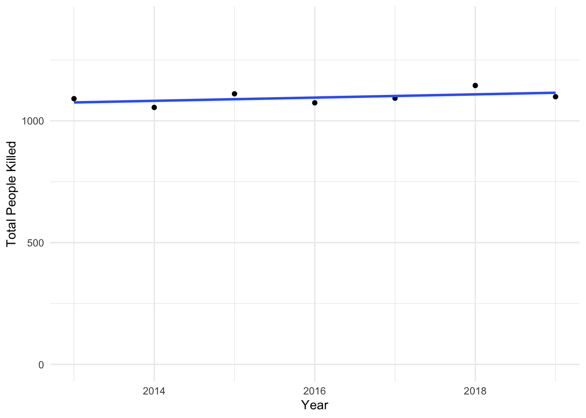
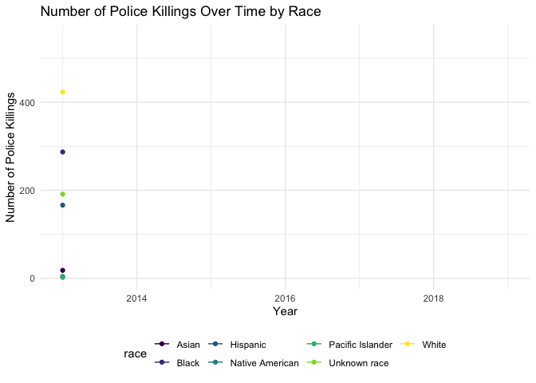
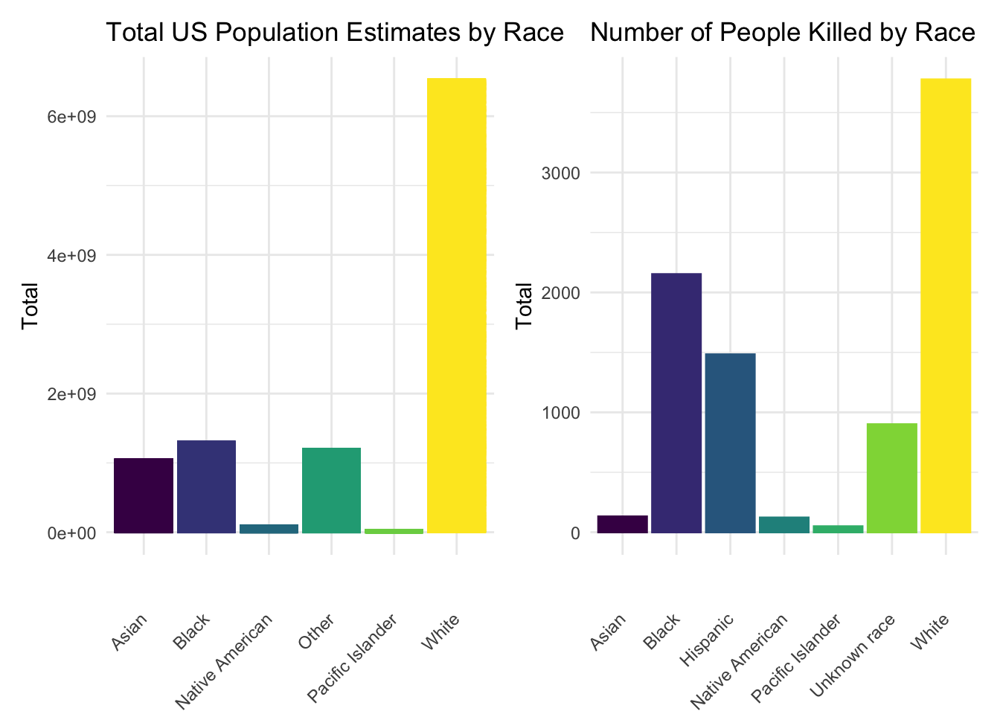
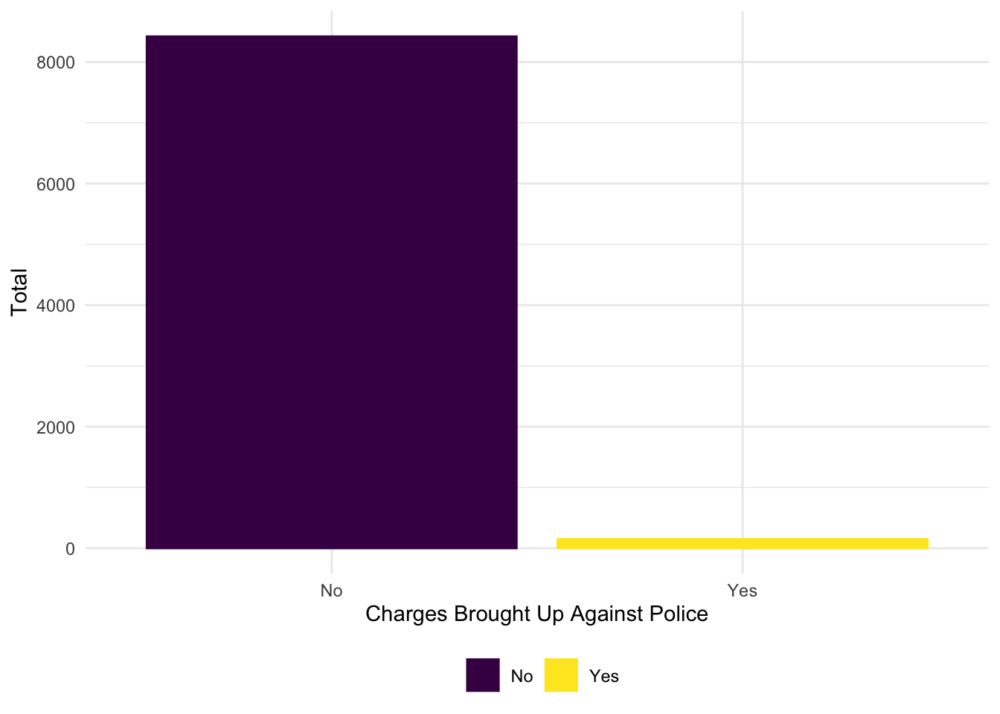

year_plot =
mpv_df %>%
count(year) %>%
rename(total_killed = n) %>%
filter(year < 2020) %>%
ggplot(aes(x = year, y = total_killed)) + geom_point() +
geom_smooth(method = lm, se = FALSE) +
scale_y_continuous(limit = c(0, 1400)) +
labs(y = "Total People Killed",
x = "Year")
year_plot
The plot above shows the total number police killings per year from 2013 through 2019. As displayed in the plot, the total number of killings has remained relatively unchanged the past 6 years despite increased public awareness of police brutality. We should also consider the possibility of error in classification due to cause of death, and potential for cases to not be classified as police violence.
anim_scatter =
mpv_df %>%
mutate(
race = str_replace_all(race, "unknown race", "Unknown race")
) %>%
filter(year < 2020) %>%
group_by(year, race) %>%
count() %>%
ggplot(aes(x = year, y = n, color = race)) +
geom_line() +
geom_point() +
labs(title = "Number of Police Killings Over Time by Race",
x = "Year",
y = "Number of Police Killings") +
transition_reveal(year)
animate(anim_scatter, renderer = gifski_renderer())
This plot shows the number of people that were killed from 2013 through 2019 by race. From this graph, White, Black, and Hispanic people are the victims of most police violence incidents and this holds relatively steady throughout this time period. However, these numbers must be compared with the overall US population by race in order to understand the risk of police use of force as a cause of death (below).
total_race =
mpv_demo_df %>%
select(-c(17:18, 21:35, 38, 40, 42, 44, 46, 48)) %>%
pivot_longer(
20:25,
names_to = "total_race",
values_to = "total_estimate"
) %>%
mutate(
total_race = str_replace(total_race, "am_in_alask", "Native American"),
total_race = str_replace(total_race, "hawaii_pi", "Pacific Islander"),
total_race = str_replace(total_race, "asian", "Asian"),
total_race = str_replace(total_race, "black", "Black"),
total_race = str_replace(total_race, "other", "Other"),
total_race = str_replace(total_race, "white", "White"),
) %>%
ggplot(
aes(x = total_race, y = total_estimate, color = total_race, fill = total_race)
) +
geom_bar(stat = "identity") +
theme(
axis.text.x = element_text(angle = 45, vjust = 0.5, hjust = 1),
legend.position = "none") +
labs(
x = "",
y = "Total"
) +
ggtitle("Total US Population Estimates by Race")
race_mpv =
mpv_demo_df %>%
mutate(
race = str_replace_all(race, "unknown race", "Unknown race"),
race = str_replace(race, "NA", "Unknown race")
) %>%
filter(race != "NA",
race != "Unknown") %>%
group_by(race) %>%
count() %>%
ggplot(aes(x = race, y = n, color = race, fill = race)) +
geom_bar(stat = "identity") +
theme(
axis.text.x = element_text(angle = 45, vjust = 0.5, hjust = 1),
legend.position = "none") +
labs(
x = "",
y = "Total"
) +
ggtitle("Number of Police Killed by Race")
total_race + race_mpv
The above plot compares the total US population estimate by race according to ACS data (left) compared with the total number of people killed by police broken down by race (right). As displayed in the plots above, a much higher proportion of those who are killed by police are black when compared to the total US population. When analyzing these estimates as proportions, we find that white people are underrepresented in police killings and Black people are overrepresented.
mpv_df %>%
count(state) %>%
rename(total_killed_st = n) %>%
arrange(desc(total_killed_st)) %>%
mutate(
state = factor(state),
state = fct_reorder(state, total_killed_st)
) %>%
plot_ly(
y = ~total_killed_st, x = ~state, color = ~state,
type = "bar", colors = "viridis") %>%
layout(
xaxis = list(title = "State"),
yaxis = list(title = "Number Killed")
)mpv_df %>%
count(state) %>%
rename(total_killed_st = n) %>%
arrange(desc(total_killed_st)) %>%
filter(total_killed_st >= 230) %>%
mutate(
state = factor(state),
state = fct_reorder(state, total_killed_st)
) %>%
plot_ly(
y = ~total_killed_st, x = ~state, color = ~state,
type = "bar", colors = "viridis") %>%
layout(
xaxis = list(title = "State"),
yaxis = list(title = "Number Killed")
)These two graphs show us the total number people killed per state from 2013-2020. The first graph contains numbers for all 50 states and the second graph contains the top 10 states with the highest number of police killings. At the top is California which is almost double the next highest state, Texas.
mpv_df %>%
count(police_dept) %>%
rename(total_killed_pd = n) %>%
filter(total_killed_pd >= 49) %>%
mutate(
police_dept = factor(police_dept),
police_dept = fct_reorder(police_dept, total_killed_pd)
) %>%
plot_ly(
y = ~total_killed_pd, x = ~police_dept, color = ~police_dept,
type = "bar", colors = "viridis") %>%
layout(
xaxis = list(title = "Police Department"),
yaxis = list(title = "Number Killed")
)
mpv_case =
mpv_df %>%
count(criminal_charges) %>%
mutate(
charges = case_when(
startsWith(criminal_charges, "Charged") ~ "Yes",
startsWith(criminal_charges, "No") ~ "No",
)) %>%
ggplot(aes(x = charges, y = n, color = charges, fill = charges)) +
geom_col() +
labs(
x = "Charges Brought Up Against Police" ,
y = "Total"
) +
theme(legend.title = element_blank())
mpv_case
The above plot shows the breakdown of whether charges were pressed against police after each case. In total,69 charges were brought up against police, compared to the 8420 cases where police were not charged.